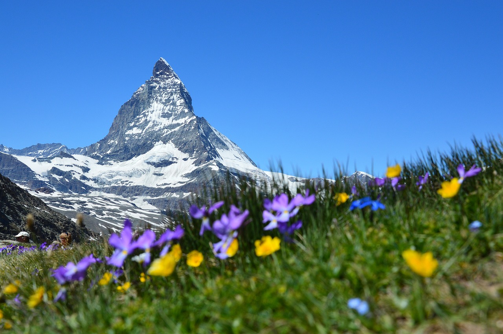

Geography of Switzerland
Geography of Switzerland
Switzerland, a landlocked country in the heart of Europe, is renowned for its stunning natural beauty. From the majestic Alps that dominate the southern skyline to the serene lakes dotting the landscape, Switzerland's geography is as diverse as it is breathtaking. This region, characterized by high mountains, rolling hills, and lush valleys, offers a unique ecological diversity. The country's climate varies significantly with altitude, presenting a variety of microclimates that are home to a rich array of flora and fauna. In this section, we will explore the distinct geographical features that define Switzerland, including its iconic mountain ranges, tranquil lakes, and verdant forests, revealing a country that is much more than its postcard-perfect scenery.
Mountains and Landscapes
Switzerland is synonymous with its dramatic mountains and serene landscapes. The Swiss Alps, a majestic mountain range stretching across the southern border, are a central part of the country's identity. Famous peaks like the Matterhorn and Eiger attract climbers from around the world. Beyond the Alps, the Jura Mountains in the northwest offer gentler slopes and lush, green valleys. The Swiss Plateau, nestled between these mountain ranges, is home to the majority of Switzerland's population and agriculture. This diverse topography contributes to a range of breathtaking landscapes, from the sparkling waters of Lake Geneva to the rolling hills of the Emmental Valley, offering a natural spectacle of unparalleled beauty.
Climate and Environment
Switzerland's climate is as varied as its topography, with distinct variations across regions. The Alps act as a climate barrier, creating differing conditions on either side. The northern part experiences a temperate climate, while the southern region, closer to the Mediterranean, enjoys milder winters and warmer summers. This diverse climate supports a wide range of flora and fauna, contributing to Switzerland's environmental richness. Switzerland is also at the forefront of environmental protection, with policies aimed at preserving its natural landscapes, promoting sustainable tourism, and protecting wildlife habitats.